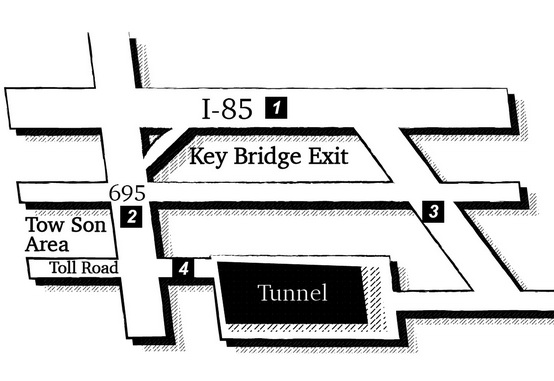

Questions 1 through 3 refer to the following short talk: 00:00 00:00 00:50 |
| Everyone, if I could have your attention please, we will go ahead and get started. First on the agenda, next Friday is our parent-teacher meetings. I'll need everyone to have all of your grades entered for this semester and uploaded onto the school's webpage by this afternoon. If a student has an overall grade that is below 70, it will be mandatory that their parents come in for a meeting. Secondly, try to keep each meeting under 30 minutes because some parents will need to see multiple teachers. Lets really try to keep things moving as swiftly as possible. Lastly, if anyone can stay later in the evenings this week to help set up sign in sheets and refreshment tables, that would be great. 大家好，請注意一下，我們要開始進行了。議程上的第一件事，下個禮拜五是我們的親師座談會。我需要大家在今天下午以前將本學期所有的成績輸入完畢並上傳到學校的網站上。如果有學生的總分在七十分以下，他們的家長就一定要到校與會。其次，盡量把每次面談時間控制在三十分鐘內，因為有些家長須和多位老師碰面。讓我們盡一切可能讓事情迅速進行。最後，如果有人這禮拜晚間可以留晚一點幫忙把簽到表跟點心桌準備好的話，那就太棒了。 重要單字及片語 agenda n. 議程 mandatory adj. 強制的 multiple adj. 多數的 swiftly adv. 迅速地 refreshment n. 茶點 discipline v. 懲處 as … as possible盡可能；愈…愈好 ex. We will investigate the bank robbery as soon as possible. 我們會盡快調查這樁搶案。 Sign in 簽到 ex. Management has made a new rule that we all have to sign in when we get to work. 管理處的新規定要求我們去工作時都要簽到。 Expel from 驅逐；開除 ex. The president of the Legislative Yuan was expelled from the party. 立法院長被開除黨籍。 |
Questions 4 through 6 refer to the following short talk:
00:00 00:00 01:05 |
|
| Tired of waking up with back pain? Sick of tossing and turning at night? Well, here at Mattress Emporium we guarantee that we can find the correct mattress for you. Due to an increase in inventory, we are slashing prices. Take the Sleep-O-Matic mattress with a retail price of $999 for example; we'll drop that down to $599. Families, are you in need of a new set of beds? Look no further because here at Mattress Emporium we are offering a family discount! If you buy one mattress, we will sell you a second mattress of any size at half price. Put an end to all of those agonizing sleepless nights and come on down to Mattress Emporium today. We're located two miles south of Highway 72, just past Taxidermy R' Us. Come see us today! 受夠了起床時會背痛嗎？厭倦了夜裡輾轉難眠嗎？在「床墊王專賣店」這裡，我們保證你可以找到適合床墊。由於存貨量的增加，我們正在大降價。以「真好眠」這款零售價為999美金的床墊為例，我們會往下降到599美金。您家裡的床都需要整組換新嗎？別再找了，因為在「床墊王專賣店」這裡我們提供家庭優惠價！如果您買一張床墊，第二張任何尺寸的床墊我們就以半價優惠。結束這些令人苦腦的失眠夜，今天就來「床墊王專賣店」看看。我們位在72號公路往南二英里處，剛過「真皮標本行」。今天就來找我們吧！
重要單字及片語 toss v. 翻來覆去；翻滾 guarantee v. 保證 mattress n. 床墊 inventory n. 存貨 slash v. 大幅度削減 retail adj. 零售的 agonizing adj. 令人痛苦難忍的 sleepless adj. 失眠的 advertisement n. 廣告 due to 由於；因為 ex. Due to my father's current health condition, I'll be spending the night in the hospital with him . 由於父親目前的健康狀況，我今晚會在醫院陪他。 in need of 需要；急需 ex. The hospital is desperately in need of type A blood. 醫院急需A型血。 put an end to結束；終止 ex. The sudden earthquake put an end to our meeting. 突然來的地震使我們的會議終止了。 |
Questions 7 through 9 refer to the following short talk: 00:00 00:00 01:07 |
| In the ongoing struggle to contain the Ebola virus, sources have confirmed that an infected French citizen is currently being treated for the disease in a hospital in Paris. The man, Pierre Tableau, 43, came to the Parisian hospital last Tuesday after experiencing symptoms of Ebola. Sources later confirmed that Tableau, a practicing nurse, had recently traveled to Liberia to visit distant relatives and to help volunteer in the understaffed hospitals of the nation's capital, Monrovia. When questioned, Liberian officials declared that upon departure, Tableau never mentioned that he had come in contact with anyone that he knew to be infected with the virus. Medical staff in Paris has quarantined Tableau in the east wing of a hospital in Paris. Friends and family close to Tableau are also being closely monitored to make sure the disease is contained. 在這場持續圍堵伊波拉病毒的奮戰中，消息來源已經證實一名染有該病的法國公民目前正在巴黎一所醫院接受治療。四十三歲的男子Pierre Tableau，出現伊波拉感染的症狀後於上周二來到巴黎一所醫院。稍後消息證實Tableau是一名護士，最近曾前往賴比瑞亞探視遠親，並在首都蒙羅維亞內幾間人力不足的醫院內擔任志工。賴比瑞亞的海關人員聲稱Tableau離境接受詢問時，從未提到他曾與任何他知道染有該病毒的人有過接觸。巴黎的醫療人員已經將Tableau隔離在巴黎一所醫院內的東側。與Tableau親近的朋友和家人也在密切的監控下以確保疫情受到控制。 重要單字及片語 ongoing adj. 進行的；不間斷的 struggle n. 努力 contain v. 控制 Ebola virus n. 伊波拉病毒 Infected adj. 受感染的 symptom n. 症狀 practicing adj. 在從事工作的 distant adj. 遠親的 understaffed adj. 人員配備不足的 departure n. 離開 quarantine v. 使隔離 in contact with 與…接觸 ex. She was in contact with infected animals just before she started feeling unwell. 正好在她不舒服之前，她有接觸過被感染的動物。 |
Questions 10 through 12 refer to the following short talk: 00:00 00:00 01:02 |
| Before I get started, I just want to thank you all for coming tonight to celebrate Gary Harken's retirement. Over the past twenty years Gary has been like a father to me here at Benson & Hedges. When I first joined the sales staff in 1994, I was one of four salesmen under Gary. In three short years, he tripled our staff and our regional coverage. But working with Gary was more than just business. Sure, he was a great boss, but he was an even better friend. Gary showed me that treating people with respect and compassion was the most import aspect of sales, no matter how ruthless the market can be. So this is how we will remember you, Gary: you were a nice guy that finished first. I truly thank you and wish you the best of luck. 開始以前，我想謝謝你們大家前來慶祝Gary Harken的退休。過去二十年在Benson & Hedges，Gary對我來說就像個父親一樣。1994年我開始踏進業務部門，我是Gary底下的四個業務員之一。短短三年內，他將業務人員的數量以及業務涵蓋區域增加了三倍。我和Gary不只是共事而已。的確，他是個很棒的上司，但他更是一位好朋友。Gary教我要誠以待人以及同理心是推銷技巧中最重要的一門，不管市場是多麼的無情。Gary，在我們的心目中：你永遠是第一名的好夥伴。我要誠摯的感謝你並祝福你一切順利。 重要單字及片語 retirement n. 退休 triple v. 增至三倍 regional adj. 區域的 coverage n. 覆蓋範圍 compassion n. 憐憫；同情 ruthless adj. 無情的；殘忍的 unemployed adj. 失業的 subordinate n. 部屬 rival n. 競爭對手 gratitude n. 感激之情；感謝 no matter how 不管怎樣 ex. No matter how hard I try to please my boss, she's never satisfied with my work. 不管我怎樣試著讓我的老闆高興，她永遠對我的工作不滿意。 |
Questions 13 through 15 refer to the following short talk: 00:00 00:00 00:54 |
| Ladies and gentlemen, as we approach the departure terminals, please check your ticket to confirm which terminal your flight will be departing from. As a friendly reminder, Domestic flights on Mountain West Airways, Beta, Condor Airlines, and Budget Zone will depart from terminal one. Domestic flights on Stagecoach Airways, Southeast Airlines, and Horizons will depart from terminal two. All passengers flying internationally today will need to report to terminal three. If you find yourself in the wrong terminal, please use the airport monorail to travel rapidly to the correct terminal. Thank you for using Sky Shuttle and to ensure a pleasant airport experience, make sure that you take all of your belongings before disembarking. 各位女士、先生，我們快到出境航站了，請檢查你的機票確認你的班機在哪一個航廈起飛。善意的提醒您，西山航空、貝達、 康德航空，以及廉航航空公司的國內線班機將從第一航廈出發。Stagecoach航空、東南航空，和天際航空公司的國內線班機會從第二航站出發。今天所有國際線的乘客必須到第三航站報到。如果你發現自己跑錯航站，請利用機場的單軌電車迅速前往正確的航站。感謝您利用機場空中巴士，為了確保你有個愉快的經驗，下車前請務必確認你已將所有個人物品帶走。 重要單字及片語 approach v. 接近；即將到達 departure n. 出境 terminal n. 航站 reminder n. 提醒 domestic adj. 國內的 internationally adv. 國際性地 monorail n. 單軌電車 rapidly adv. 迅速地 disembark v. 下車 depart from 離開；啟程 ex. The train to Taipei will depart from platform 7 immediately. 開往台北的列車馬上要離開月台了。 report to 報到 ex. All new students have to report to their homeroom teacher to pick up their textbooks. 所有的新生必須向導師回報去領取教科用書。 pick up 用汽車搭載某人或接某人 ex. The taxi driver has picked up our customer from the airport. 計程車司機已經從機場接到我們的客戶了。 |
Questions 16 through 18 refer to the following short talk: 00:00 00:00 00:41 |
| For your weekend forecast, ladies and gentlemen, you can expect sunny skies and low humidity across most of the Southeast on Saturday with a high of 88 degrees. On Sunday, however, all those gorgeous days we've been enjoying will be a thing of the past because a strong low-pressure system is moving in slowly from the Midwest that will bring significant showers to the region. Expect temperatures to drop down to the low eighties during the day and it could even bring some severe weather. Moving ahead to Wednesday, that low-pressure system will work its way eastward toward the Carolinas and sunny skies will once again prevail here in the Tennessee Valley. 未來這個週末的天氣預測，女士、先生們，您可以期待這禮拜六整個東南部的大部分地區晴朗且濕度偏低的好天氣，高溫達到華氏88度。但是到了禮拜天，這一陣子我們喜歡的好天氣就要結束了，因為有一個強烈的低氣壓正從中西部緩緩移入，為本地區帶來顯著的降雨。除了白天氣溫最低會降到華氏八十幾度，甚至可能會帶來惡劣的天氣。接下來看到禮拜三的天氣，這個低氣壓系統會向東往卡羅萊納州移動，之後陽光會再次普照田納西河流域。 重要單字及片語 forecast n. 預測；預報 humidity n. 濕度 gorgeous adj. 極好的 low-pressure adj. 低壓的 significant adj. 顯著的 severe adj. 劇烈的 prevail v. 普及；盛行 imminent adj. 即將發生的 meteorological adj. 氣象的 waterproof adj. 防水的 a thing of the past 老式的東西；過時的事物 ex. This problem will be a thing of the past once we resolve this issue. 一但我們解決這個問題，這件麻煩事將成為過去式。 drop down 急遽下降 ex. Now is a good time to get a credit card because interest rates have dropped down to 1%. 目前是申請信用卡的好時機，因為利率已經下降了百分之一。 |
Questions 19 through 21 refer to the following short talk:
00:00 00:00 01:02 |
|
| Hello everyone, and welcome to the American Dental Association Annual Conference. If I could ask everyone to look over here to your right, you'll notice our registration table. Before entering the main conference room, we'll need everyone to sign in here and take the blue packet that contains all of your conference materials. Please do not forget to wear your conference identification card because without it, you will not be allowed to access any of the events. To give everyone a rough idea of what our schedule will look like today, our first round of presentations will get started around 9 am and run until lunch. Each presentation will last one hour. We'll take a two-hour lunch break and from 2 to 4 pm, we will do team building exercises. If there aren't any questions, I'll ask everyone to go ahead and get your materials. 大家好，歡迎參加美國牙科協會年會。請各位往您的右手邊看，您會看到我們的登記櫃檯。進到大會主廳之前，需要各位到櫃檯簽名並領取這個藍色資料包，內有全部的會議資料。請別忘了配戴您的會議識別證，少了它您就不能參加任何活動。概略說一下我們今天的時間安排，我們第一輪的簡報將從大約上午九點進行到午餐時間。每一段簡報會持續一個小時。我們會休息二小時用午餐，然後從下午二點到四點我們會有分組練習。如果沒有問題的話，那就請各位前去領取您的資料。
重要單字及片語 dental adj. 牙科的；牙齒的 registration n. 登記 packet n. 小包裹 identification card 身分證；識別證 access v. 進入 rough adj. 粗略的 presentation n. 簡報 sign in 簽到 ex. Club members have to sign in before they can partake in any activities. 俱樂部會員參加活動前都要簽到。 |
Questions 22 through 24 refer to the following short talk: 00:00 00:00 00:40 |
| Hey, John. This is Julius Hovator here from Appliance Jungle. I just wanted to return your call regarding the washing machine you purchased from us. Judging from your description of the noise that the machine is making, it seems that your inner-tub and your outer-tub are slightly off their axis causing them knock up against the metal wall of the washer. This is a common problem for new machines and it's a pretty easy fix. The problem is that all of our repair staff is booked solid until Wednesday, but I'll do my best to rearrange our schedule to get someone there sooner. In the meantime, you can try leveling the washer yourself. Sorry again for the inconvenience. John。我是Appliance Jungle公司的Julius Hovator。我想對你來電詢問有關你向公司購買洗衣機的事做個回覆。就你所描述的洗衣機所發出的噪音來判斷，似乎是你的洗衣機的內槽與外槽些微地偏離軸心，造成它們與洗衣機的金屬壁面碰撞。這是新的洗衣機常見的問題且很容易修好。問題是我們所有的維修人員到禮拜三的預約時間都已經排滿了，但我會盡可能重新安排時間早點派人過去。這段期間，你可以試著自行將洗衣機調成水平。很抱歉造成你的不便。 重要單字及片語 regarding prep. 關於 description n. 描述 inner-tub n. 內槽 outer-tub n.外槽 axis n. 軸 leveling n. 使成水平 disgruntled adj. 不滿的；不高興的 upkeep n. 維護；保養 washing machine 洗衣機 ex. The washing machine has been broken for three days. 這台洗衣機已經壞三天了。 judging from 根據…做出判斷 ex. Judging from the new evidence, the suspect is innocent. 根據新的證據來判斷，這個嫌疑犯是清白的。 |
Questions 25 through 27 refer to the following short talk:  00:00 00:00 00:46 |
| This is your 92.3 Charm City hourly traffic report brought to you by Wholesome Bran Cereal. Traffic is moving at a snail's pace today down most of the I-85 corridor near White Marsh due to an accident near the off-ramp. Motorists taking the tunnel beware of a collision on Toll Road that has traffic backed up for miles. Drivers taking 695 today should drive carefully this morning because road crews are repairing the right lane stretching from Towson to the Key Bridge exit. Workers are present all along the route, so please drive slowly and refrain from passing other cars. This has been your 92.3 morning traffic report. Drive safely. 這是「魅力城市92.3電台」整點路況報導，由「強健麥片公司」所贊助提供。由於I-85號公路匝道出口有起事故發生，在靠近White Marsh附近目前的車流移動速度正以蝸速前進。行經隧道的駕駛人要當心透爾路上的車輛相撞而造成車流回堵數英里。早上走695號道路的駕駛人今天要小心開車，因為道路工程小組正在維修從透申一路到奇翼大橋的匝道出口的右側車道。沿線都有工人在作業，因此請駕駛人放慢車速並且不要超車。以上是92.3電台的晨間路況報導。祝行車平安。 重要單字及片語 hourly adj. 整點的；每小時的 off-ramp n. (高速公路等)駛出匝道 motorist n. 開汽車的人 tunnel n. 隧道 collision n. 碰撞 crew n. 工作人員 stretch v. 延伸 route n. 路線 construction n. 施工 guardrail n. 欄杆 at a snail's pace 極慢 ex. The disabled man crossed the street at a snail's pace. 那個行動不變的人過街時走得很緩慢。 beware of 注意；小心 ex. You must beware of the pickpockets in the market. 在市場裡你必須要小心扒手。 refrain from 避免 ；制止 ex. Please refrain from using your cellphone during the movie. 請克制不要看電影時使用手機。 |
Questions 28 through 30 refer to the following short talk: 00:00 00:00 00:45 |
| From June 1st through 4th, Summer Slam is back again and this year it's going to be bigger than ever. Come down to see California's premier poetry and folk music festival featuring literary geniuses Madeline LaRue and Jess Stanphill. Musical guests include amazing up and coming artists such as Taught and Trivial, Hidden Cutlery Friends, Moose Authority and many, many more. Tickets go on sale on May 4th and can be purchased online at www.summerslam.com. Camping will be allowed, but please no recreational vehicles. What are you waiting for? Get in touch with your deeper side here at Summer Slam! 從六月一號到四號，Summer Slam音樂會捲土重來而且今年的規模將比以往更大。親自來看看加州最重要的詩與民謠嘉年華會，主打場有文學才子Madeline LaRue和Jess Stanphill 。音樂人嘉賓包括令人驚嘆的新銳藝人，像是「Taught and Trivial」、「Hidden Cutlery Friends」、「Moose Authority」等且還有更多。門票將於五月四號開始販售，可在www.summerslam.com 網路購票。會場可露營但請勿開露營車前來。你還在等什麼？到Summer Slam與心靈深處對話吧！ 重要單字及片語 premier adj. 首要的 poetry n. 詩 folk adj. 通俗的 festival n. 慶祝活動 feature v. 以…做為號召；以…為特色 up and coming adj. 嶄露頭角的 promote v. 宣傳 protest n. 抗議 recreational vehicle 家庭用旅遊車 ex. Recreational vehicle come with equipment that make them quite suitable for camping. 家庭用旅遊車的裝備相當適合露營使用。 get in touch with sb. 與…聯絡 get in touch with oneself 探討內心世界 ex. The reception on my cell phone isn't very good right now, so I can't get in touch with my mother. 我的手機目前收訊不好，所以我無法和媽媽聯絡。 |